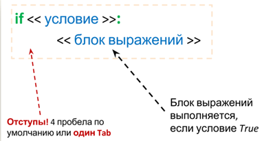
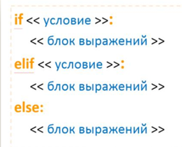
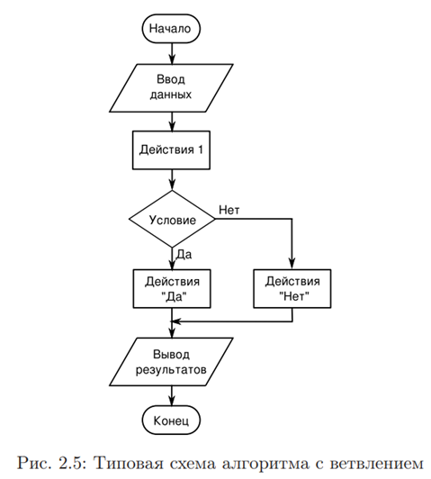
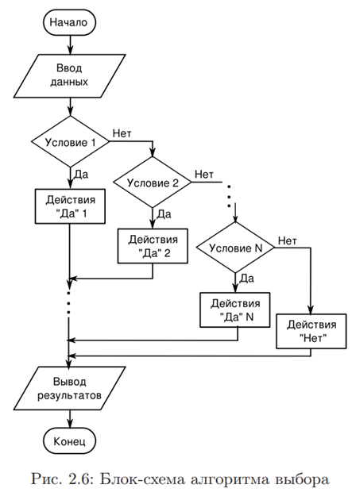

Условные операторы позволяют в зависимости от значения логического выражения выполнить отдельный участок программы или, наоборот, не выполнять его. Логические выражения возвращают только два значения True или False, которые ведут себя как целые числа 1 и 0, соответственно.
Например, True + 2 получим 3; False + 2 получим 2.
Логическое значение можно сохранить в переменной: х = True.
Для определения логического значения можно использовать функцию bool().
Значение True возвращает следующие объекты:
а) любое число, не равное 0: bool(1), bool(-20), bool(20)
б) не пустой объект: bool(“0”), bool(0, None), bool(“x”:5)
Следующие объекты интерпретируются как False:
а) число, равное 0: bool(0), bool(0.0)
б) пустой объект: bool(“”), bool([]), bool(())
в) значение None: bool (None)
Операторы сравнения:
== - равно
1==1, 1==5 получим: True, False
!= - не равно.
1!=1, 1!=5 получим: False, True
< - меньше.
1<1, 1<5 получим: False, True
> - больше.
1>0, 1>5 получим: True, False
< = - меньше или равно.
1<=1, 1<=5 получим: True, True
>= - больше или равно.
1>=0, 1>=5 получим: True, False
in – проверка на вхождение в последовательность
“строка” in ”строка для поиска” получим: True
Этот оператор можно также использовать для проверки существования ключа словаря:
“x” in (“x” : 1, “y” : 2), “z” in (“x” : 1, “y” : 2) получим: True, False
not in – проверка на вхождение в последовательность
“строка” not in ”строка для поиска” получим: False
2 not in (1, 2, 3), 4 not in (1, 2, 3) получим: False, True
is – проверяет, ссылаются ли две переменные на один и тот же объект, если ДА, то оператор возвращает значение True
x = y = [1, 2]
x is y получим: True
x = [1, 2]; y = [1, 2]
x is y получим: False
В целях повышения эффективности интерпретатор производит кэширование малых целых чисел и небольших строк. Это означает, что если ста переменным присвоено число 2, то в этих переменных скорее всего будет сохранена ссылка на один и тот же объект.
x = 2, y = 2, z = 2
x is y, y is z получим: True, True
is not – проверяет, ссылаются ли две переменные на разные объекты, если ДА, то оператор возвращает значение True
x = y = [1, 2]
x is not y получим: False
x = [1, 2]; y = [1, 2]
x is not y получим: True
not – инвертирует значение логического выражения
x = 1, y = 1
x == y получим: True
not (x == y) получим: False (Скобки можно не ставить, так как оператор not имеет более низкий приоритет, чем оператор сравнения).
В логическом выражении можно указывать сразу несколько условий:
x = 10
1 < x < 20, 11 < x < 20 получим: True, False.
Простые логические выражения можно объединять в сложные при помощи операторов and, or, исключающее ИЛИ. Знаки побитовых операций: | - ИЛИ, & - И, ^ - исключающее ИЛИ.
Побитовое исключение-или уже встроено в Python в модуле operator (который идентичен оператору ^ ):
>>> from operator import xor
>>> xor(bool(2), bool(2))
False
ЗАДАЧА 1. Вводятся два числа в двоичной системе счисления. Требуется выполнить над ними побитовые операции И, ИЛИ и исключающее ИЛИ. Вывести результат операций в двоичном представлении.
РЕШЕНИЕ: Побитовые операции выполняются над разрядами числа. Так если имеем два числа 101 и 100, над которыми выполняется побитовая операция ИЛИ, то получим двоичное число 101:
101
100
101
В языке программирования Python побитовые операции применяются к числам, представленными в десятичной системе счисления. Функция int() всегда преобразует переданную ей строку в десятичную систему счисления. При этом вторым аргументом можно указать, в какой системе счисления содержатся данные в этой строке (двоичной, восьмеричной, шестнадцатеричной). Функция bin(), наоборот, принимает десятичное число и возвращает строку, являющуюся представлением переданного числа в двоичном виде. Получим программу:
n1 = input("Первое число : ")
n2 = input("Второе число: ")
n1 = int(n1, 2)
n2 = int(n2, 2)
bit_or = n1 | n2
bit_and = n1 & n2
bit_xor = n1 ^ n2
print(" OR: %s" % bin(bit_or))
print("AND: %s" % bin(bit_and))
print("XOR: %s" % bin(bit_xor))
Получим следующий результат:
Первое: 10100
Второе: 111
OR: 0b10111
AND: 0b100
XOR: 0b10011
Оператор ветвления:
Оператор ветвления if…else позволяет в зависимости от логического выражения выполнить отдельный участок программы или, наоборот, не выполнить его. Оператор имеет следующий формат:
if <логическое выражение>:
<блок, выполняемый, если условие истинно>
[elif <логическое выражение>:
<блок, выполняемый, если условие истинно>
]
[else:
<блок, выполняемый, если условие ложно>
]
Блоки внутри составной инструкции выделяются одинаковым количеством пробелов (обычно четырьмя). Концом блока является инструкция перед которой расположено меньшее количество пробелов.




ЗАДАЧА 2. Написать программу, которая проверяет, является ли введенное пользователем число четным. После проверки выводится соответствующее сообщение.
РЕШЕНИЕ:
x = int(input("введите число: "))
if x % 2 == 0:
print (x, ' - число четное')
else:
print (x, ' - число
нечетное')
Если блок состоит из одной инструкции, ее можно разместить в одной строке с заголовком (но лучше так не делать!). Например,
if x % 2 == 0: print (x, ' - число четное')
Оператор ветвления позволяет проверить сразу несколько условий.
ЗАДАЧА 3. Написать программу, которая проверяет, какой операционной системой вы пользуетесь.
РЕШЕНИЕ:
print("""какой операционной
системой вы пользуетесь?
1 - Windows 10
2 - Windows 8.1
3 - Windows 8
4 - Windows 7
5 - Windows Vista
6 - Другая""")
os = input("введите число, соответствующее ответу: ")
if os == "1":
print("вы выбрали Windows 10")
elif os == "2":
print("вы выбрали Windows 8.1")
elif os == "3":
print("вы выбрали Windows 8")
elif os == "4":
print("вы выбрали Windows 7")
elif os == "5":
print("вы выбрали Windows Vista")
elif os == "6":
print("вы выбрали: Другая")
elif not os:
print("вы не ввели число")
else:
print("мы не смогли определить вашу ОС")
С помощью инструкции elif мы можем определить выбранное значение и вывести соответствующее сообщение.
Один условный оператор можно вложить в другой. Следите за отступами!
print("""какой операционной
системой вы пользуетесь?
1 - Windows 10
2 - Windows 8.1
3 - Windows 8
4 - Windows 7
5 - Windows Vista
6 - Другая""")
os = input("введите число, соответствующее ответу: ")
if os != "":
if os == "1":
print("вы выбрали Windows 10")
elif os == "2":
print("вы выбрали Windows 8.1")
elif os == "3":
print("вы выбрали Windows 8")
elif os == "4":
print("вы выбрали Windows 7")
elif os == "5":
print("вы выбрали Windows Vista")
elif os == "6":
print("вы выбрали: Другая")
else:
print("мы не смогли определить вашу ОС")
else:
print("вы не ввели число")
Оператор ветвления if…else имеет еще один формат:
<переменная> = <если истина> if <условие> else <если ложь>
Например, print("Yes" if 11 % 2 == 0 else "No")
ЗАДАЧА 4. Найти корни квадратного уравнения.
РЕШЕНИЕ: Квадратное уравнение имеет вид ax2 + bx + c = 0
При его решении сначала вычисляют дискриминант по формуле D = b2 - 4ac
Если D > 0, то квадратное уравнение имеет два корня; если D = 0, то 1 корень; и если D < 0, то делают вывод, что корней нет.
Таким образом, программа для нахождения корней квадратного уравнения может иметь три ветви условного оператора.
Функция float() преобразует переданный ей аргумент в вещественное число.
import math
print("Введите коэффициенты для уравнения")
print("ax^2 + bx + c = 0:")
a = float(input("a = "))
b = float(input("b = "))
c = float(input("c = "))
discr = b ** 2 - 4 * a * c
print("Дискриминант D = %.2f" % discr)
if discr > 0:
x1 = (-b + math.sqrt(discr)) / (2 * a)
x2 = (-b - math.sqrt(discr)) / (2 * a)
print("x1 = %.2f \nx2 = %.2f" % (x1, x2))
elif discr == 0:
x = -b / (2 * a)
print("x = %.2f" % x)
else:
print("Корней нет")
Пример выполнения кода:
Введите коэффициенты для уравнения
ax^2 + bx + c = 0:
a = 3.2
b = -7.8
c = 1
Дискриминант D = 48.04
x1 = 2.30
x2 = 0.14
Обратим внимание, что для данной программы коэффициент a не должен быть равен нулю. Иначе в первой ветке условного оператора будет происходить попытка деления на 0. Если a = 0, то квадратное уравнение превращается в линейное, которое решается иным способом. Оно всегда имеет один корень.
ЗАДАЧА 5. Определить по трем сторонам, существует ли такой треугольник?
РЕШЕНИЕ: У треугольника сумма любых двух сторон должна быть больше третьей. Иначе две стороны просто "лягут" на третью и треугольника не получится.
Пользователь вводит длины трех сторон. Программа должна определять, может ли существовать треугольник при таких длинах. Это значит, необходимо сравнить суммы всех пар сторон с оставшейся третьей стороной. Чтобы треугольник существовал, сумма всегда должна быть больше отдельной стороны или, по крайней мере, не меньше, если учитывать так называемый вырожденный треугольник.
Поскольку всего три стороны, то можно составить три варианта сложения двух сторон: a + b, b + c, a + c. Первую сумму сравниваем с оставшейся стороной c, вторую - с a и третью - с b. Если хотя бы в одном случае сумма окажется не больше третьей стороны, то делается вывод, что треугольник не существует.
print("Стороны:")
a = float(input("a = "))
b = float(input("b = "))
c = float(input("c = "))
if a + b > c and a + c > b and b + c > a:
print("Треугольник существует")
else:
print("Треугольник не существует")
Можно решить задачу сложнее. Если требуется также определить, какая из сторон больше суммы двух других, то решение может быть таким:
print("Длины сторон треугольника:")
a = float(input("a = "))
b = float(input("b = "))
c = float(input("c = "))
flag = ''
if a + b > c:
if a + c > b:
if b + c > a:
print("Треугольник есть")
else:
flag = 'a'
else:
flag = 'b'
else:
flag = 'c'
if flag != '':
print("Треугольника нет")
print("'%s' > суммы других" % flag)
Примерный результат выполнения программы:
Длины сторон треугольника:
a = 4
b = 5
c = 10
Треугольника нет
'c' > суммы других